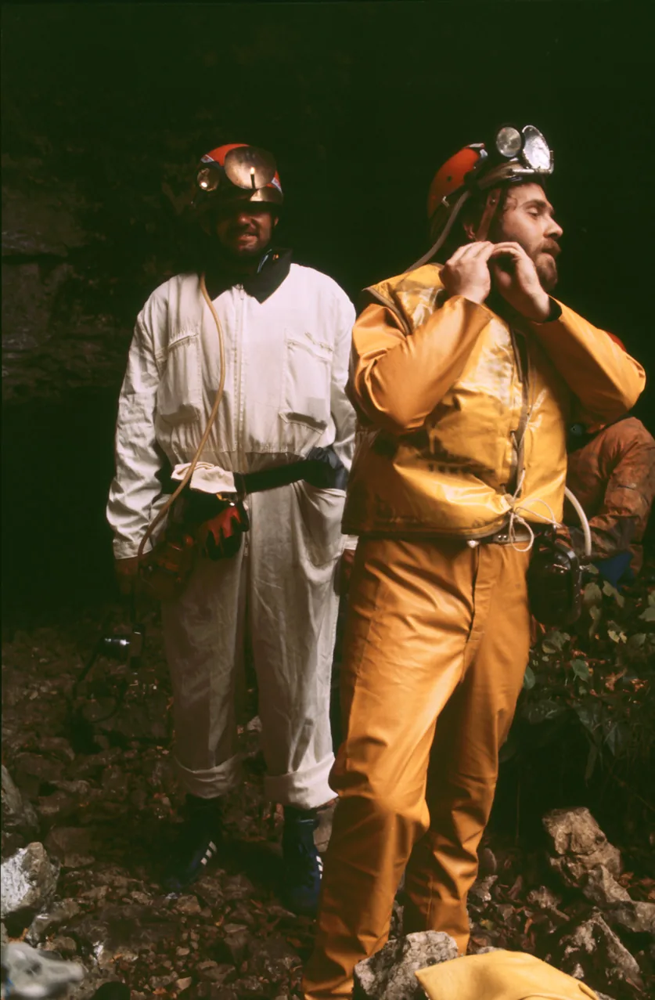

U sjećanje: Darko Cucančić - Cuco
Dana 19.07.2022. smo se na mirogojskom krematoriju oprostili od našeg prijatelja, Velebitaša, planinara, speleologa i gorskog spašavatelja Cucančić Darka-Cuce, koji je nakon teške bolesti umro u 68. godini života.

Robert Erhardt
U SJEĆANJE
Darko Cucančić-Cuco (18.04.1954.-12.07.2022.)
Dana 19.07.2022. smo se na mirogojskom krematoriju oprostili od našeg prijatelja, Velebitaša, planinara, speleologa i gorskog spašavatelja Cucančić Darka-Cuce, koji je nakon teške bolesti umro u 68. godini života.
Cuco je od svojih studentskih dana, kao student arhitekture 70-tih godina postao član PDS Velebit u kojem se aktivno bavio speleologijom i svim drugim planinarskiom aktivnostima: skijanjem i skijaškim trčanjem,planinarskom orjentacijom, biciklizmom itd.
Velebitovu Zagrebačku speleološku školu je završio 1975. , nakon koje ubrzo stječe naziv speleologa. Nakon problema i raskola u speleološkom odsjeku Cuco je kao mlađi speleolog bio jedan od nositelja speleoloških aktivnosti u tom osjetljivom razdoblju – organizirajući mnoge izlete i istraživanja, a 1979. Vodi speleološki odsjek kao pročelnik. Kako su mlađe generacije kojima je Cuco bio instruktor i mentor počele polako preuzimati odgovornost za sve uspješnije speleološke aktivnosti, Cuco je krunu svoje speleološke aktivnosti ostvario istraživanjima najvećih hrvatskih špiljskih sustava Panjkovog ponor-Kršlje i Đulin ponor-Medvedica i sudjelovanjem na speleološkim ekspedicijama: 2. hrvatskoj speleološkoj ekspediciji Maroko 1983. , Velebitovoj speleološkoj ekspediciji u Austriji 1984. i stjecanjem naslova instruktora speleologije 1994.
U održavanju i prenošenju „Velebitaškog duha“ i dobre atmosfere, koja je od uvijek krasila Velebit i Velebitaše Cuco je doprinosio gitarom u ruci učeći mlađe Velebitaše Velebitaškom repertoaru pjesama na mnogim sastancima i druženjima, gitarijadama i dočecima Novih Godina; naravno uz pjesmu i sviranje gitare, bendža ili tamburice. Cucina kornjača ( tamburica sa kornjačinim oklopom kao rezonantnom kutijom) je bio jedan od artikala koji se često nalazio u Cucinom ruksaku, na veselje svih sudionika izleta.
Osim dobre atmosfere uz pjesmu i svirku, Cucu je krasio i sposeban smisao za humor. Njegove dosjetke i doskočice su ponekad bile i britke i oštre ali uvijek dobro došle i rado prihvaćene od svih.
Svoj „dug prema Velebitu“ Cuco je rado vraćao preuzimanjem odgovornosti kao organizator i vođa izleta i drugih aktivnosti. Bio je spreman podmetnuti leđa kad god je to bilo potrebno, kao što je bilo nošenje greda i drugog materijala pri izgradnji novog Ratkovog skloništa.
Svoju spremnost je dokazao i obnašanjem odgovorne dužnosti predsjednika PDS Velebita 1995. godine.
Cijeli svoj aktivni planinarski život Cuco je bio aktivni član HGSS-a: od kraja 70-tih godina, kad postaje član pa do kraja života. 1983. Postaje gorski spašavatelj i sudjeluje u mnogim akcijama spašavanja.
Osim svih ovih planinarskih aktivnosti Cucina velika ljubav bilo je more i jedrenje. Na svojoj jedrilici obišao je sve zakutke Jadrana. Puno nas, njegovih prijatelja, plovilo je na njegovom brodu pod njegovom iskusnom skiperskom rukom.
Nakon svega rečenoga suvišno je isticati da će svima nama Velebitašima i prijateljima Cucina prisutnost jako nedostajati.
Počivao u miru i neka te i tamo gdje jesi zauvijek okružuju najljepši špiljski ukrasi, zelene planinarske livade i vrhunci i plava morska prostranstva.